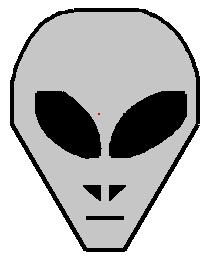
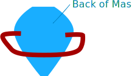

Make an Alien Mask

You can make an alien mask like this one:
You will need:
- Some squared paper
- some card - A4 is ideal
- Some Glue
- Pens or paints.
- A stapler or sticky tape.
If you do not have any squared paper you can download this file in rtf format. Open it in your word processor and print it out
Once you have your materials draw an x and y axis on the squared paper.
The x axis should go from 0 to 19
The y axis should go from 0 to 28
Now plot these coordinates and join them up like dot to dot as you go:
Face:
(8,4) (11,4) (17,16) (17,20) (16,23) (15,25) (14,26) (12,27) (7,27) (5,26) (4,25) (3,23) (2,20) (2,16)Left Eye:
(4,19) (6,19) (8,17) (9,14) (9,13) (8,13) (6,14) (4,17)Right Eye:
(15,19) (13,19) (11,17) (10,14) (10,13) (11,13) (13,14)Left Nose:
(8,10) (9,10) (9,9)Right Nose:
(10,10) (11,10) (10,9)Mouth:
(8,7) (11,7)Once you have plotted the coordinates, join them together like a dot to dot.
Now follow these instructions
- Cut out the face and stick it onto a piece of card.
- Cut out the eyes
- Paint the face.
- Now cut two piece of card about 4cm wide from the long side of a piece of A4 card and stick them together, end to end, like this:
- Staple one end to the alien mask. Place the mask against your
face and place the strip of card around your head. Cut to size
and attach to the other side of the mask. It should be a bit like
below.

Thats it, you now have an alien mask!